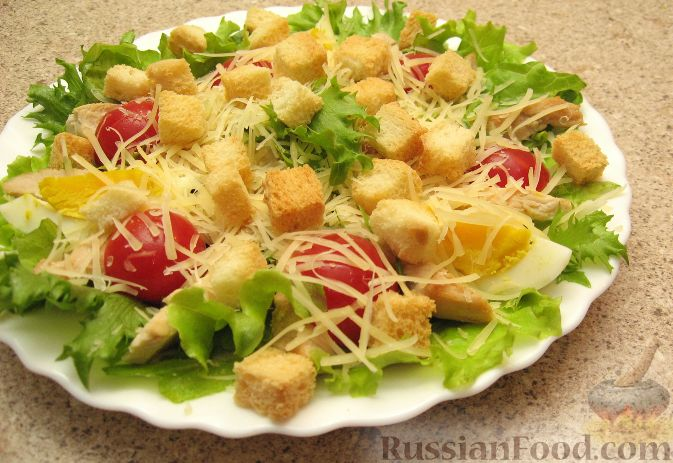

Цезарь

Описание
это листовой салат Романо, кусочки обжаренного хлеба,
тертый сыр пармезан и особая заправка из желтков,
итальянского масла, вустерского соуса, чеснока и лимонного сока
Ингредиенты
- зеленый салат
- помидоры
- куринное филе
- белый хлеб
- сливочное масло
- сыр пармезан
- чеснок
Шаги
- Промыть, просушить и нарвать на небольшие
кусочки листья салата, отложить в холодильник.
- В горячую сковородку положить 1 столовую ложку
сливочного масла. После того, как оно полностью расплавится
и начнет шипеть, кинуть нарезанный на пластины зубчик чеснока.
- Куриную грудку нарезать на кусочки приблизительно 1×3 см.
Положить в сковороду к чесноку и маслу. Обжаривать на
сильном огне приблизительно 10 минут до румяной корочки. Снять с огня.
- В ту же сковородку добавить еще одну столовую ложку сливочного масла и
второй зубчик чеснока. В это время нарезать на небольшие
кубики хлеб. Положить в сковороду и обжаривать до
румяной корочки. Желательно непрерывно помешивать, чтобы не подгорело.
- Достать листья салата, туда же положить обжаренную куриную грудку, помидоры,
нарезанные тонкой соломкой. Заправить соусом «Цезарь». Перемешать.
gСверху положить получившиеся сухарики и натереть сыр.